珍寺的篠栗霊場巡り
61番 山王寺
珍寺的篠栗霊場巡り、総本山の南蔵院拝観を終え、そこはかとなく終盤モードに。
で、次に訪れたのは61番山王寺。やや陽も傾いてきた。
篠栗の中央を貫通し東西に走る国道201号の南側の山中にある比較的大きなお寺だ。
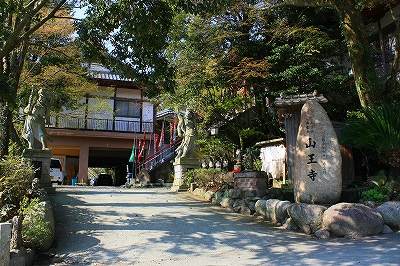 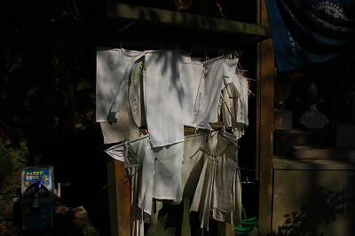
お地蔵さんが並ぶ階段を上っていくと大師堂がある。
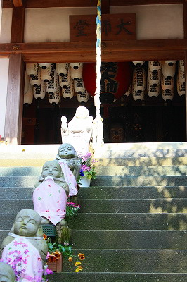 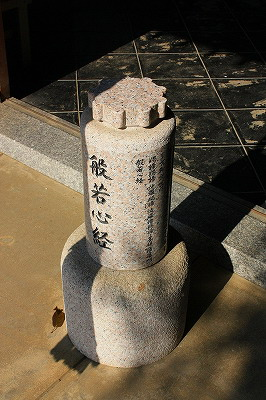
中央には3ｍほどの大師像。椅子まで付いていてとても立派である。
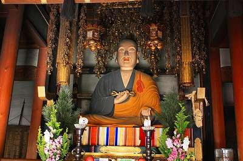
大師像の右には厨子に入ったたくさんの観音像。
中央に滝があってちょっとしたジオラマ仕立てになっている。
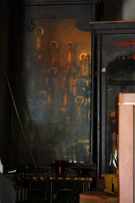
このような形状のものをたま〜に見かけるのだが、何と呼んだらいいのだろう。凄くココロ惹かれるアイテムではあるんですけど。
で、大師サマの左には何故か人力車が。
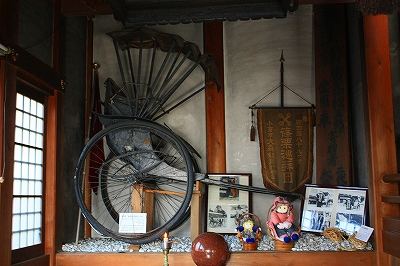
何かと思ったら、ぬあんと富島松五郎の人力車であった。
富島松五郎、別名無法松。無法松の一生でお馴染みの男気の塊のような人物である。
今はなき新宿コマ劇場で俺☆ゴッドファーザーこと北島三郎大先生が演じた無法松の一生を観て大感激した私としては思い入れはひとしお、無法松キター！てなもんである。
ええとですね…私にとってサブちゃんは如来なわけですから（異論は一切認めませんよっ！）、無法松はいってみれば菩薩みたいなもんですよね。で、そのツールなわけだから…文殊菩薩の乗ってる獅子が奉納されてるようなものなんですよ。
凄いでしょ。ね。凄いでしょ！
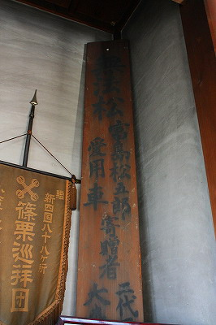 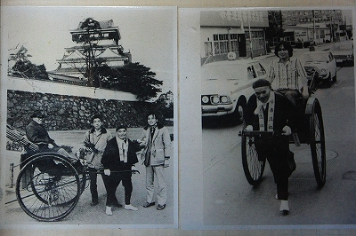
昭和38年に奉納されたこの人力車。昭和18年に封切られた映画「無法松の一生」で使用されたものだという。
何でも田村正和のパパ、板東妻三郎が演じたそうで。監督は伊丹万作。
調べてみたら無法松の一生って4度も映画化されてるんですね。
上記の板妻版無法松が第一回。
で、二回目が何と三船敏郎バージョン。そして三回目が三國連太郎、四回目は勝新！！
ハッキリ言って映画界の神のような俳優だけが演ずることを許された役柄なのである。
…まあ、無法松話をこのまま続けると終わんなくなっちゃうんでとりあえず置いとくが、人力車奉納って凄すぎやしませんか。
例え車夫界のスーパースターである無法松の人力車であったとしてもお寺に奉納するモノとしては大き過ぎますよね。
これだけ大型の奉納物があるのも何でも呑み込む度量の大きさというか何でもアリの篠栗霊場ならでは、という気がする。
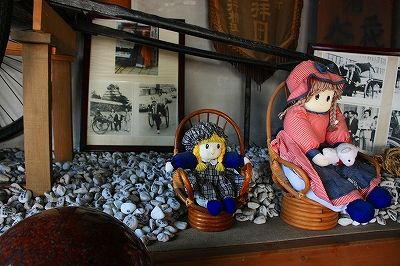
人力車の下にはたくさんの小石が。願い事や名前がびっしりと書き込まれていたです。
ファンシーな人形が何気なく添えられるところが篠栗霊場の奥の深いところ、とお見受けした。
人力車の手前には木の手形足形と草鞋。そうか。人力車の奉納は健脚のメタファーだったのか！
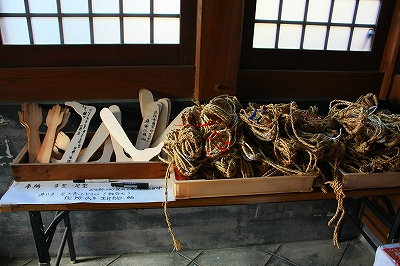
そんなこんなで大師堂を後にする。
そこから本堂に向かう。
新築の本堂前には巨大な五円玉が奉納されていた。
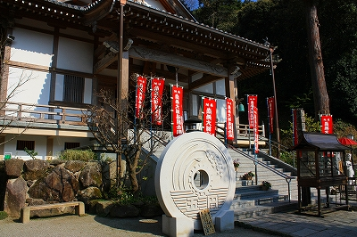
石の五円玉といえば太陽公園を思い出さざるを得ない。
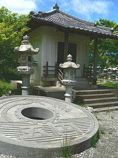 ←太陽公園の巨大五円玉。そっくりですね、当たり前か。
本堂周辺には様々な信仰アイテム。
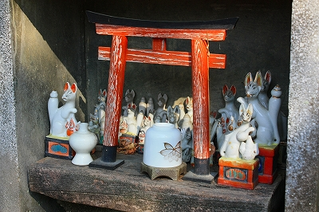
お稲荷さん、観音様＆その他諸々…
こういった何気ない、自然発生的に現れた祠やお堂が篠栗霊場には異様に多い。
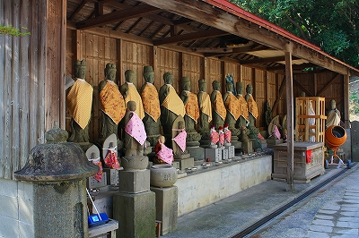 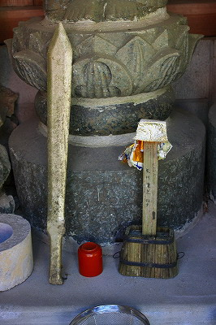
ひとつひとつはこれといって特筆すべきものはない。かといって無視できないレベルの石仏や奉納物がひっきりなしに現れる。
そんなたくさんの願いの集積がこの霊場全体の空気を濃密にしているのだ。
だきつき観音、抱きついちゃっていいのか？
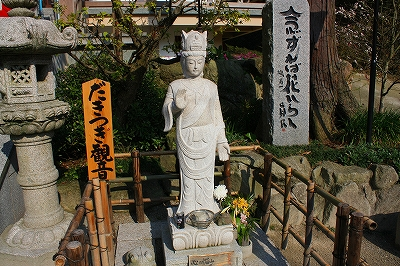 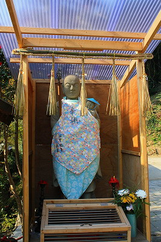
お寺から下界というか国道方面を見ると葬祭場である三重塔風の「篠栗町葬祭場 天空会館 鉄閣寺」の姿が。
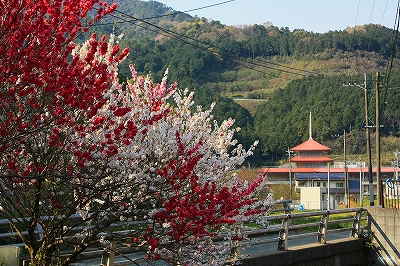
桃の花が冗談のように咲き誇っていた。
次でラストです！
珍寺的篠栗霊場巡りTOPへ
珍寺大道場 HOME